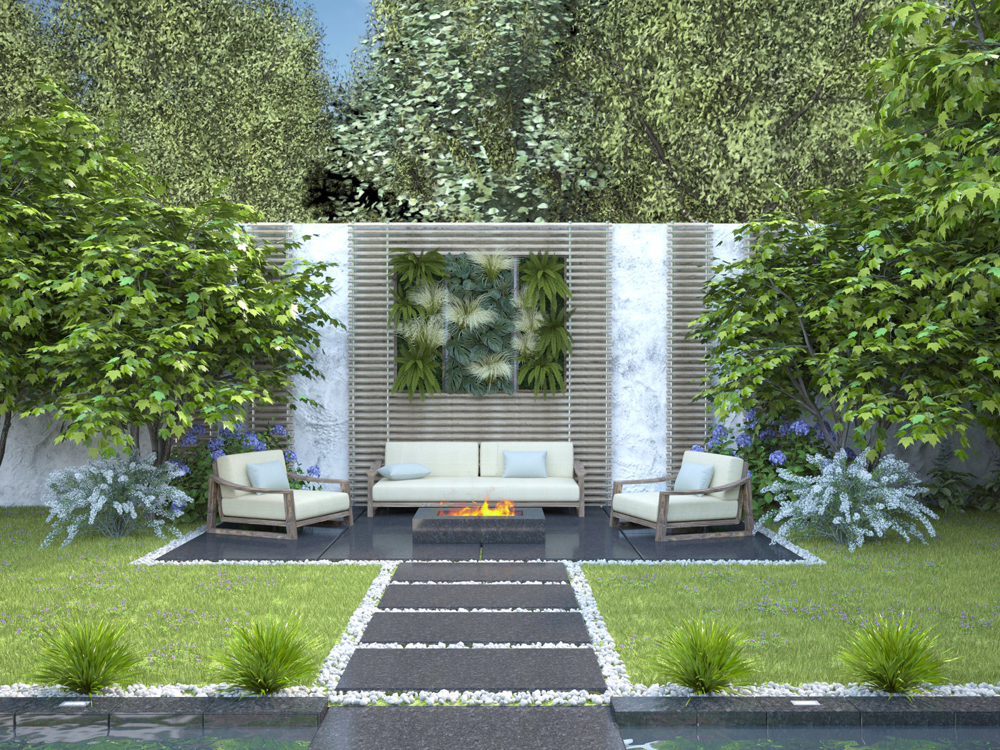
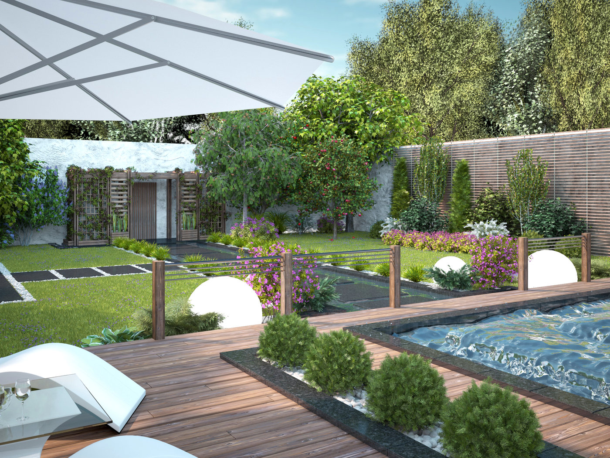
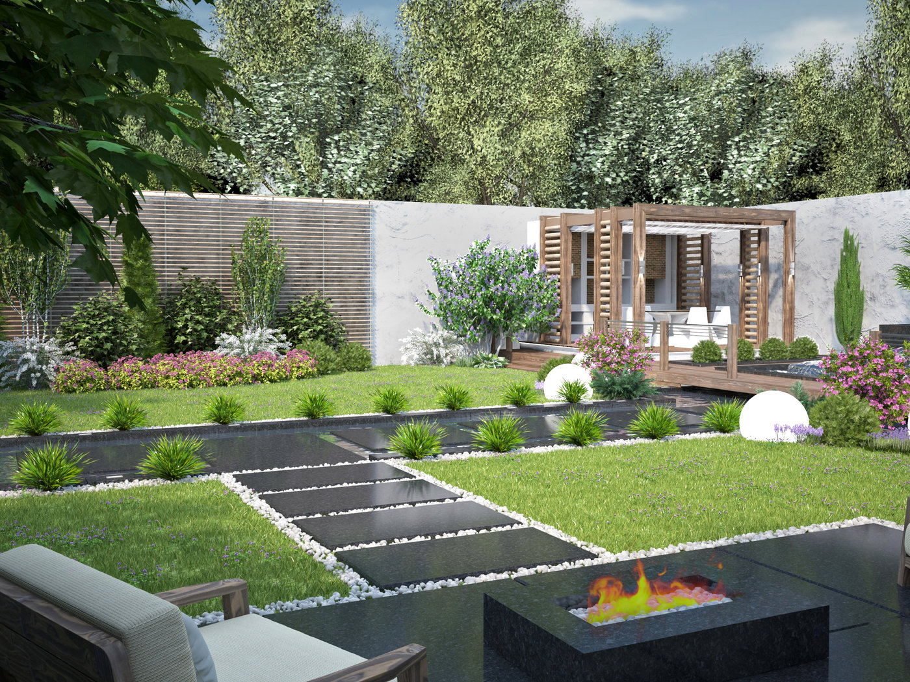

Transform Your Space

At Lucky Shrub, we believe that every outdoor space has the potential to become a beautiful, tranquil oasis. Our expert team of garden designers works closely with you to understand your vision and bring it to life. Whether you have a small urban balcony or a sprawling estate, we create customized garden designs that reflect your style and enhance your outdoor living experience. From lush greenery to vibrant flower beds, we transform your space into a sanctuary where you can relax and unwind.
Sustainable Garden

We are committed to sustainable gardening practices that not only beautify your surroundings but also protect the environment. Our designs incorporate native plants, water-efficient irrigation systems, and organic gardening techniques to create eco-friendly gardens that thrive with minimal maintenance. By choosing Lucky Shrub, you are not only investing in a stunning garden but also contributing to a healthier planet. Let us help you create a green space that is both beautiful and sustainable.
Expert Maintenance

Maintaining a garden can be a daunting task, but with Lucky Shrub's expert maintenance services, you can enjoy a pristine garden all year round. Our team of skilled horticulturists provides regular care, including pruning, fertilizing, pest control, and seasonal planting. We tailor our maintenance plans to suit your garden's specific needs, ensuring that it remains healthy and vibrant. With our professional care, your garden will continue to flourish, providing you with a beautiful outdoor space to enjoy every day.